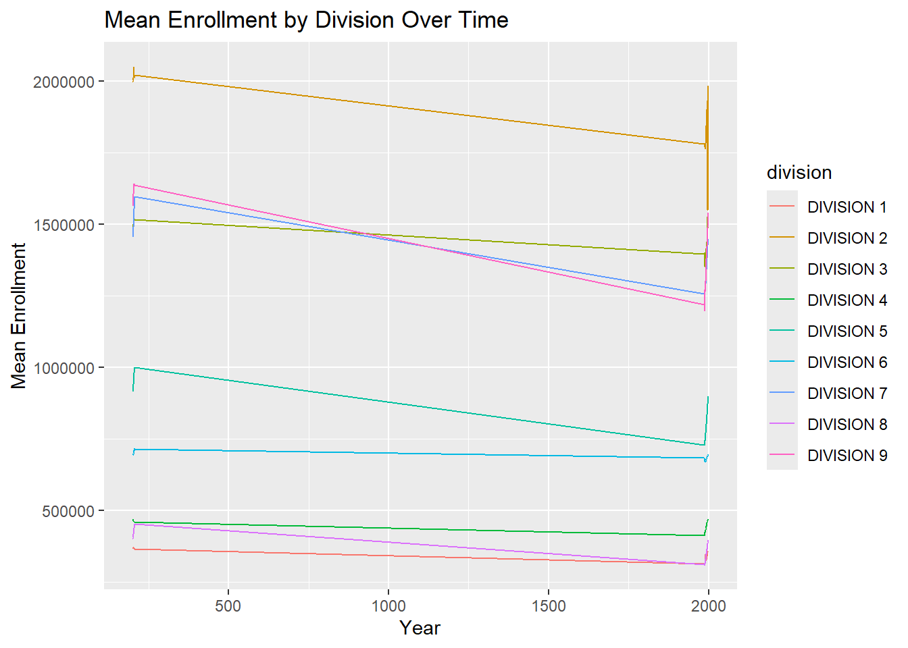
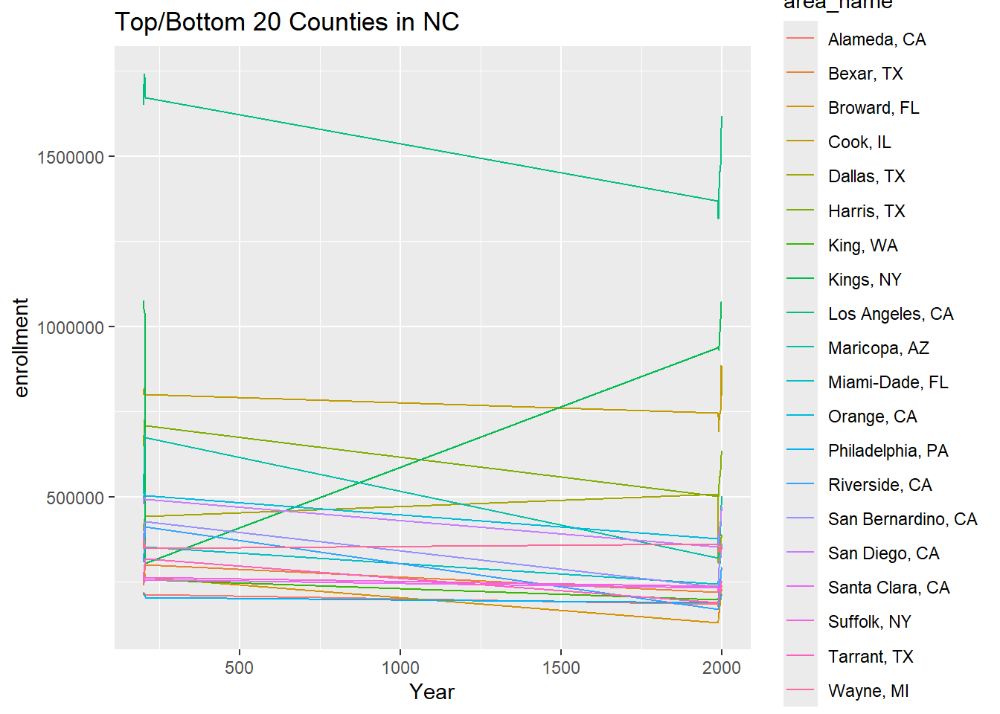
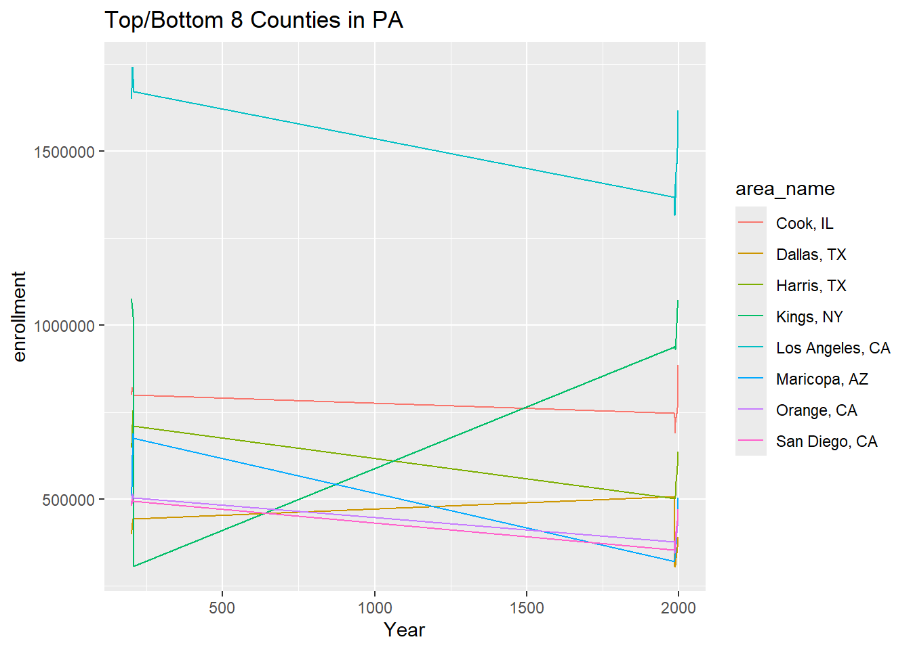
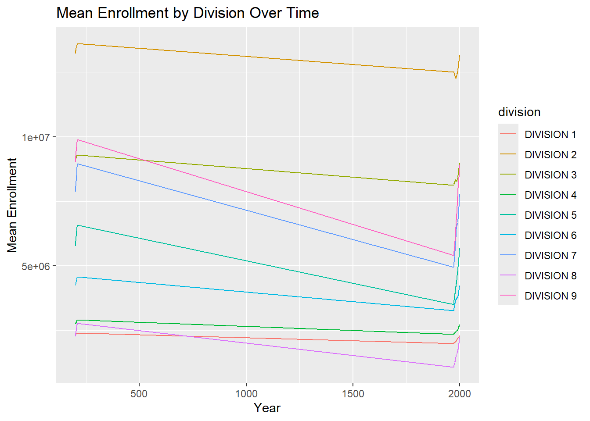
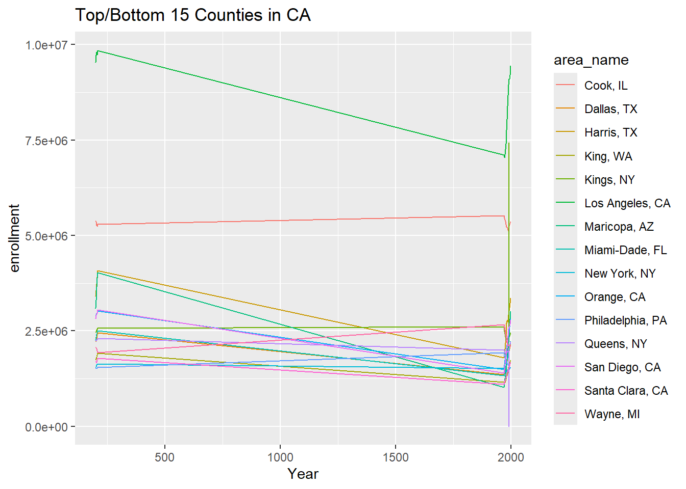

# Plot state functionplot.state <-function(df, var_name ="enrollment") { df <- df %>%filter(division !="ERROR") %>%group_by(year, division) %>%summarize(mean_value =mean(.data[[var_name]], na.rm =TRUE), .groups ='drop')ggplot(df, aes(x = year, y = mean_value, color = division)) +geom_line() +labs(title ="Mean Enrollment by Division Over Time",x ="Year",y ="Mean Enrollment")}# Plot county functionplot.county <-function(df, state =NULL, group ="top", number =5, var_name ="enrollment") {if (!is.null(state)) { df <- df %>%filter(state == state) } summary_df <- df %>%group_by(area_name) %>%summarize(mean_value =mean(.data[[var_name]], na.rm =TRUE), .groups ='drop') %>%arrange(if (group =="top") desc(mean_value) else mean_value) %>%slice_head(n = number) plot_df <- df %>%filter(area_name %in% summary_df$area_name)ggplot(plot_df, aes(x = year, y = .data[[var_name]], color = area_name)) +geom_line() +labs(title =paste("Top/Bottom", number, "Counties in", state),x ="Year",y = var_name)}
Putting it Together
# URLs of datasetsurls <-c("https://www4.stat.ncsu.edu/~online/datasets/EDU01a.csv","https://www4.stat.ncsu.edu/~online/datasets/EDU01b.csv")# Process datadata_list <-lapply(urls, process_data)
Warning: `as.tibble()` was deprecated in tibble 2.0.0.
ℹ Please use `as_tibble()` instead.
ℹ The signature and semantics have changed, see `?as_tibble`.
# Combine datacombined_data <-combine_data(data_list)# Plot state dataplot.state(combined_data$non_county, var_name ="enrollment")

# Plot county data with different parametersplot.county(combined_data$county, state ="NC", group ="top", number =20, var_name ="enrollment")

plot.county(combined_data$county, state ="SC", group ="bottom", number =7, var_name ="enrollment")
plot.county(combined_data$county, state ="PA", group ="top", number =8, var_name ="enrollment")

# Additional URLs for further processingadditional_urls <-c("https://www4.stat.ncsu.edu/~online/datasets/PST01a.csv","https://www4.stat.ncsu.edu/~online/datasets/PST01b.csv","https://www4.stat.ncsu.edu/~online/datasets/PST01c.csv","https://www4.stat.ncsu.edu/~online/datasets/PST01d.csv")# Process additional dataadditional_data_list <-lapply(additional_urls, process_data)# Combine additional datacombined_additional_data <-combine_data(additional_data_list)# Plot additional state dataplot.state(combined_additional_data$non_county, var_name ="enrollment")

# Plot additional county data with different parametersplot.county(combined_additional_data$county, state ="CA", group ="top", number =15, var_name ="enrollment")

plot.county(combined_additional_data$county, state ="TX", group ="top", number =4, var_name ="enrollment")